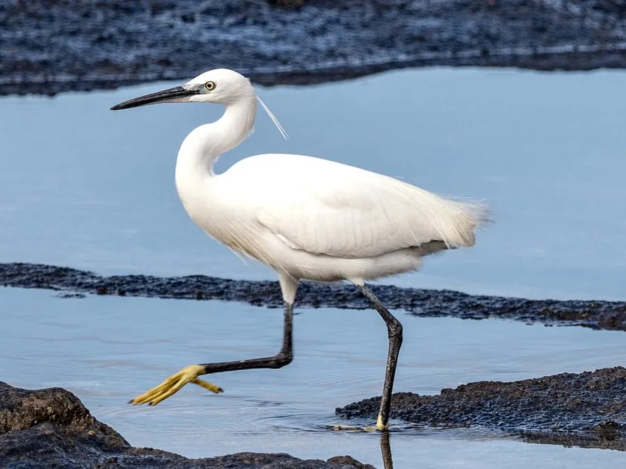

鸟类 · 动物界
白鹭 Egretta garzetta

全身雪白、腿黑趾黄的优雅涉禽，繁殖期头后长出两条细长饰羽，常在浅水中缓步捕鱼，是诗词中的常客。
- 分类
- 门脊索动物门纲鸟纲目鹈形目科鹭科属白鹭属
- 栖息环境
- 湖泊、河滩、稻田、沼泽、红树林与沿海滩涂等浅水湿地
- 地理分布
- 欧洲南部、非洲、亚洲和澳大利亚，中国南方常见，北方多为夏候鸟
- 保护级别
- IUCN 无危（LC）；中国“三有”保护动物
物种志
白鹭体长 55–65 cm，翼展 88–106 cm，体重 350–550 g。全身羽毛雪白，喙细长呈黑色，腿黑色而脚趾亮黄色，常被形容为“穿黑裤、蹬黄鞋”。繁殖期它的头后会长出两根细长的白色饰羽，背部和胸部也披着蓬松的蓑羽，是它最美丽的时刻。
白鹭广泛分布于欧洲南部、非洲、亚洲和澳大利亚，中国南方常见，北方多为夏候鸟。它栖息在湖泊、河滩、稻田、沼泽、红树林和沿海滩涂等浅水湿地，常单脚或双脚站立，用长喙闪电般啄食小鱼、虾、蛙类和昆虫。繁殖期白鹭会与其他鹭类混群，在树上营巢，形成热闹的“鹭鸟林”，每窝产卵 3–5 枚，孵化 21–25 天。它们飞行时颈部缩成“S”形、双腿向后伸直，姿态被写进“两个黄鹂鸣翠柳，一行白鹭上青天”等诗句中。
形态与习性
- 食性小鱼、虾、蛙类、昆虫和水生无脊椎动物
- 体长55–65 cm
- 翼展88–106 cm
- 体重350–550 g
- 繁殖集群树上营巢，每窝 3–5 枚卵，孵化 21–25 天
- 特征黑喙黑腿、黄色脚趾，繁殖期头后长出两缕长饰羽
- 寿命野外约 10 年
趣味知识
- 白鹭飞行时颈部缩成“S”形、双腿向后伸直，姿态优雅如舞蹈。
- 繁殖期白鹭头后长出两根细长饰羽，背部的蓑羽曾长期被用于装饰帽子。
- 古诗说“一行白鹭上青天”，它们常在水边慢步行走，用长喙啄起小鱼。
- 白鹭会与其他水鸟混群营巢，形成热闹的“鹭鸟林”。